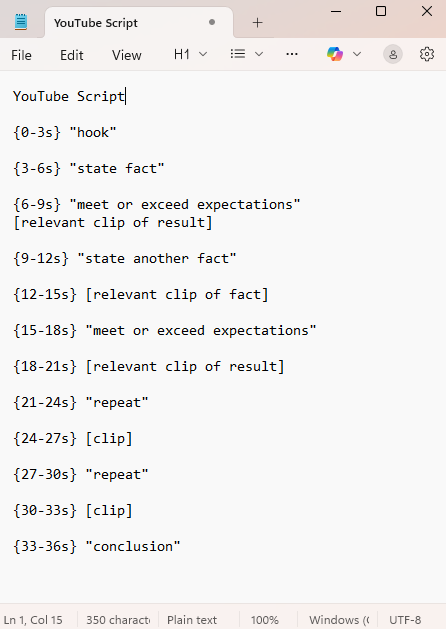

How I Built a Viral YouTube Channel in a Single Month [JUNE 12, 2025 - JULY 12, 2025]
TL;DR
This is the story of going from zero editing experience to 8.5M+ views. One month ago, I'd never edited a video. Post one month, I'm looking at over 8.5 million views across my YouTube channel. Here's the exact process I used to crack the algorithm and the three breakthrough insights that changed everything.
**Details have been modified to maintain channel anonymity**
The Strategic Foundation
In a world where the global entertainment and media industry is valued at $2.8 trillion and projected to reach $3.4 trillion by 2028, I saw an opportunity to leverage content creation for personal branding and career growth.
- My train of thought:
- Create quality content → Go viral → Leverage personal branding → Get hired
The Execution
Phase 1 | Building the Foundation
The very first thing I did was nail down exactly who I was creating for - not just "everyone," but a specific audience niche with specific interests. Then I gave my channel a face: designing a logo and banner that would instantly tell viewers what they were getting into. Only after I had this solid foundation did I dive into the messy world of video creation, breaking down every single component until I had a system I could repeat over and over.
Phase 2 | The Production System
Here's the exact process I followed for every video: I'd start by brainstorming at least 3 different concepts, then narrow down to the strongest one. Next, I'd plan out the entire video flow and write a general script to keep me on track. Then came the production phase, either capturing my own footage or sourcing the perfect B-roll clips that would support my narrative. In the editing room, I became ruthless, extracting only the most compelling moments and cutting everything else. Finally, I'd package it all up with click-worthy thumbnails, compelling titles, and detailed descriptions with proper citations. Then I'd hit upload and immediately start the cycle again.
The Three Breakthrough Insights
1st | The 3-Second Rule
You have exactly 3 seconds to capture initial attention. Through testing, I discovered that motion hooks outperformed question hooks and shock tactics. Starting with immediate visual movement proved most effective, whether it's quick cuts, animations, or dynamic camera work.
2nd | The Engagement Loop
Keep them hooked with continuous micro-cliffhangers. Tease something → satisfy it → immediately tease something bigger. 'You won't believe this... [show] ...but here's the crazy part...' Layer in scene changes or sound effects every 3 seconds to maintain engagement.
3rd | Algorithm Patience Strategy
Early videos WILL underperform while YouTube learns your audience. Success requires persistence through initial low performance. Once the breakthrough happens, previous content gains retroactive traction. 
The Breakthrough Moment
After 18 days of consistent uploads, one video exploded to 980,000+ views within 72 hours. This created a momentum shift that elevated all subsequent content performance.
What I Actually Learned
This experiment taught me more about human psychology than any textbook could. Beyond just learning content psychology and how to design videos that capture attention, or mastering YouTube's algorithm and recommendation patterns, the real transformation was internal. I developed persistence under uncertainty, continuing to create even when videos seemed to "fail" week after week. I built genuine inner discipline, learning to resist external comparisons and choose patience over the constant craving for instant gratification. While I picked up technical skills like video editing, thumbnail design, and scripting along the way, the mental resilience I developed turned out to be far more valuable.
The Bigger Picture
Whether I continue this channel or pivot to other projects, I now understand how to capture and hold human attention, a skill that's valuable far beyond YouTube. In our attention economy, this knowledge applies to presentations, marketing, product development, and any field where engaging an audience matters. The process works. The question isn't whether you can build an audience. It's whether you're willing to persist through the initial phase where it feels like nothing is working.
**I have intentionally left out specific details to maintain channel anonymity, but I'm happy to answer questions about the process if you reach out personally**